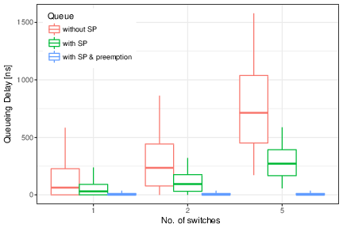
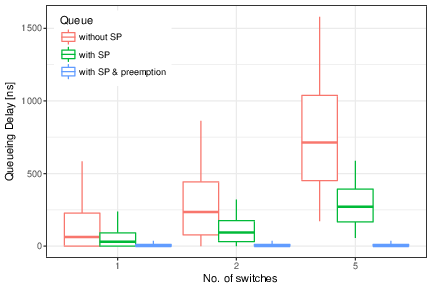

Design and Analysis of 5G Scenarios
Iñaki Ucar, José Alberto Hernández, Pablo Serrano, Arturo Azcorra
2018-05-02
Source:vignettes/simmer-aa-5G.Rmd
simmer-aa-5G.RmdAbstract
Simulation frameworks are important tools for the analysis and design of communication networks and protocols, but they can result extremely costly and/or complex (for the case of very specialized tools), or too naive and lacking proper features and support (for the case of ad-hoc tools). In this paper, we present an analysis of three 5G scenarios using
simmer, a recent R package for discrete-event simulation that sits between the above two paradigms. As our results show, it provides a simple yet very powerful syntax, supporting the efficient simulation of relatively complex scenarios at a low implementation cost.
This vignette contains the code associated to the article Design and Analysis of 5G Scenarios with simmer: An R Package for Fast DES Prototyping (see the draft version on arXiv), published in the IEEE Communications Magazine (see citation("simmer")). Refer to the article for a full description and analysis of each scenario.
Crosshauling of FH and BH traffic
This scenario is motivated by the Cloud Radio Access Network (C-RAN) paradigm, where the mobile base station functionality is split into simple Remote Radio Heads (RRH), spread across the deployment and connected by fiber to centralized (and possibly virtualized) Base-Band Units (BBU), at the operators’ premises.
In this C-RAN paradigm, fronthaul (FH) traffic from the RRH has stringent delay requirements, while backhaul (BH) traffic from the BBU has mild delay requirements. In a general topology, such as the one illustrated in the figure, packet switches will forward both types of traffic. We use simmer to simulate the scenario and decide whether introducing service differentiation might improve the ability to fulfil the delivery guarantees of FH traffic.
These are the configuration parameters considered:
C <- 40e9 # link capacity [bps]
rho <- 0.75 # utilization
FH_EX <- (80 + 46) * 8 / C # avg. FH interarrival time [s]
BH_bytes <- c(40, 576, 1500) # BH traffic distribution
Weights <- c(7, 4, 1) / 12 #
BH_EX <- sum(Weights * (8 * BH_bytes / C)) # avg. BH interarrival time [s]
FH_w <- 0.5 # FH traffic ratio
BH_w <- 1 - FH_w # BH traffic ratio
FH_lambda <- FH_w * rho / FH_EX # FH avg. rate [pkts/s]
BH_lambda <- BH_w * rho / BH_EX # BH avg. rate [pkts/s]
Tsim <- 1e5 / (FH_lambda + BH_lambda) # simulation timeThe model is defined and encapsulated into the simulate function. Then, several scenarios with different parameters are defined in cases, which can be run in parallel:
library(simmer)
set.seed(1234)
# parametrized simulation function
# - param[["n_switch"]] is the number of switches
# - param[["fh_prio"]] is the priority level for FH traffic
# - param[["preemptive"]] is the preemptiveness flag for switches
simulate <- function(param) {
# single FH traffic trajectory traversing n_switch elements sequentially
fh_traffic <- lapply(1:param[["n_switch"]], function(i) {
trajectory() %>%
seize(paste0("switch", i)) %>%
timeout(FH_EX) %>%
release(paste0("switch", i))
}) %>% join()
# list of n_switch trajectories, one per element, modeling the interfering BH traffic
bh_traffic <- lapply(1:param[["n_switch"]], function(i) {
trajectory() %>%
seize(paste0("switch", i)) %>%
timeout(function() sample(BH_bytes*8/C, size=1, prob=Weights)) %>%
release(paste0("switch", i))
})
# simulation environment
env <- simmer() %>%
# generator of FH traffic
add_generator("FH_0_", fh_traffic, function() rexp(100, FH_lambda), priority=param[["fh_prio"]])
for (i in 1:param[["n_switch"]])
env %>%
# n_switch resources, one per switch
add_resource(paste0("switch", i), 1, Inf, mon=FALSE, preemptive=param[["preemptive"]]) %>%
# n_switch generators of BH traffic
add_generator(paste0("BH_", i, "_"), bh_traffic[[i]], function() rexp(100, BH_lambda))
env %>%
run(until=Tsim) %>%
wrap()
}
# grid of scenarios
cases <- expand.grid(n_switch = c(1, 2, 5),
fh_prio = c(0, 1),
preemptive = c(TRUE, FALSE))
# parallel simulation
system.time({
envs <- parallel::mclapply(split(cases, 1:nrow(cases)), simulate,
mc.cores=nrow(cases), mc.set.seed=FALSE)
})Finally, the information is extracted, summarised and represented in a few lines of code:
library(tidyverse)
bp.vals <- function(x, probs=c(0.05, 0.25, 0.5, 0.75, 0.95)) {
r <- quantile(x, probs=probs, na.rm=TRUE)
names(r) <- c("ymin", "lower", "middle", "upper", "ymax")
r
}
arrivals <- envs %>%
get_mon_arrivals() %>%
left_join(rowid_to_column(cases, "replication")) %>%
filter(!(fh_prio==0 & preemptive==TRUE)) %>%
separate(name, c("Flow", "index", "n")) %>%
mutate(total_time = end_time - start_time,
waiting_time = total_time - activity_time,
Queue = forcats::fct_recode(interaction(fh_prio, preemptive),
"without SP" = "0.FALSE",
"with SP" = "1.FALSE",
"with SP & preemption" = "1.TRUE"))
arrivals %>%
filter(n_switch == 1) %>%
# plot
ggplot(aes(Queue, waiting_time*1e9, color=Flow)) + theme_bw() +
stat_summary(fun.data=bp.vals, geom="boxplot", position="dodge") +
theme(legend.justification=c(0, 1), legend.position=c(.02, .98)) +
labs(y = "Queueing Delay [ns]", x = element_blank())
arrivals %>%
filter(Flow == "FH") %>%
# plot
ggplot(aes(factor(n_switch), waiting_time*1e9, color=Queue)) + theme_bw() +
stat_summary(fun.data=bp.vals, geom="boxplot", position="dodge") +
theme(legend.justification=c(0, 1), legend.position=c(.02, .98)) +
labs(y = "Queueing Delay [ns]", x = "No. of switches") 

Mobile traffic backhauling with FTTx
We next consider the case of a residencial area with a Fiber-To-The-Premises (FTTx) infrastructure, that is, an Optical Distribution Network (ODN), composed of the Optical Line Terminal (OLT), splitters, and the Optical Network Unit (ONU) at the users’ premises. As the figure illustrates, we assume that an operator is planning to deploy an antenna, carrying the mobile traffic over the ODN, and is considering two implementation options:
- Deployment of a Small Cell, reducing the amount and requirements of the generated traffic.
- Deployment of an RRH, following the C-RAN paradigm discussed above, which would therefore generate time-sensitive FH traffic.
In both cases, we analyze the upstream channel of a Time-Division Multiplexed Passive Optical Network (TDM-PON) providing broadband access to the residential users and the mobile users.
These are the configuration parameters considered:
C <- 1.25e9 # link capacity [bps]
Tg <- 1e-6 # guard time [s]
bytes <- c(40, 576, 1500) # traffic distribution
Weights <- c(7, 4, 1) / 12 #
EX <- sum(Weights * (8 * bytes / C)) # avg. interarrival time [s]
burst <- 20 # burst length [pkts]
ONU_lambda <- 20e6 / C / EX # avg. rate per ONU [pkts/s]
SC_lambda <- 150e6 / C / EX # avg. rate for the SC [pkts/s]
RRH_on <- 8 * 6000 / C # RRH on period [s]
RRH_period <- RRH_on * C / 720e6 # RRH total period [s]
RRH_off <- RRH_period - RRH_on # RRH off period [s]The model is defined and encapsulated into the simulate function. Then, several scenarios with different parameters are defined in cases, which can be run in parallel:
# helper function: round-robin-based selection of ONUs
cyclic_counter <- function(n) {
n <- as.numeric(n)
i <- 1
function(op) {
if (!missing(op)) {
i <<- i + op
if (i > n) i <<- 1
else if (i < 1) i <<- n
}
i
}
}
# helper function: generator of packet sizes of n packets
gen_pkts <- function(n) sample(bytes*8/C, size=n, prob=Weights, replace=TRUE)
# helper function: double-exponential generator of interarrival times
gen_exp <- function(lambda, burst) function()
unlist(lapply(rexp(100/burst, lambda/burst), function(i) c(i, rep(0, rpois(1, burst)))))library(simmer)
set.seed(1234)
# parametrized simulation function
# - param[["scenario"]] is the scenario identifier (A=small cell, B=RRH)
# - param[["ONU_n"]] is the number of ONUs
# - param[["limit"]] is the max. transmission window
simulate <- function(param) {
# global variables
lambda <- rep(ONU_lambda, param[["ONU_n"]])
limit <- rep(param[["limit"]], param[["ONU_n"]]) * 8 / C
if (param[["scenario"]] == "A") {
param[["ONU_n"]] <- param[["ONU_n"]] + 1
lambda <- c(lambda, SC_lambda)
limit <- c(limit, Inf)
tx_t <- RRH_on + Tg + Tg * 0:param[["ONU_n"]]
} else {
Tg_n <- RRH_off %/% Tg - 1
Tg_i <- rep(1:Tg_n, length.out=param[["ONU_n"]]+1)
period_i <- rep(0:param[["ONU_n"]], each=Tg_n, length.out=param[["ONU_n"]]+1)
tx_t <- RRH_on + RRH_period * period_i + Tg * Tg_i
}
eq_pkts <- rep(list(NULL), param[["ONU_n"]])
tx_pkts <- rep(list(NULL), param[["ONU_n"]])
t_head <- tail(tx_t, 1)
onu_i <- cyclic_counter(param[["ONU_n"]])
remaining <- Inf
# DBA logic
set_next_window <- function() {
# time until the next RRH_on
if (param[["scenario"]] == "B")
remaining <- (t_head %/% RRH_period + 1) * RRH_period - t_head
# generate new pkt lengths
pkts <- get_queue_count(env, paste0("ONU", onu_i()))
eq_pkts[[onu_i()]] <<- c(eq_pkts[[onu_i()]], gen_pkts(pkts - length(eq_pkts[[onu_i()]])))
# reserve the next transmission window
eq_cumsum <- cumsum(eq_pkts[[onu_i()]])
n <- sum(eq_cumsum <= min(limit[[onu_i()]], remaining - Tg))
if ((pkts && !n) || (remaining <= Tg)) {
# go past the next RRH_on
t_head <<- t_head + remaining + RRH_on + Tg
n <- sum(eq_cumsum <= min(limit[[onu_i()]], RRH_off - 2*Tg))
}
tx_pkts[[onu_i()]] <<- head(eq_pkts[[onu_i()]], n)
eq_pkts[[onu_i()]] <<- tail(eq_pkts[[onu_i()]], -n)
tx_t[[onu_i()]] <<- t_head
t_head <<- t_head + sum(tx_pkts[[onu_i()]]) + Tg
index <<- 0
tx_t[[onu_i(1)]] - now(env)
}
# list of ONU_n trajectories, one per ONU
ONUs <- lapply(1:param[["ONU_n"]], function(i) {
trajectory() %>%
seize(paste0("ONU", i)) %>%
set_capacity(paste0("ONU", i), 0) %>%
seize("link") %>%
timeout(function() {
index <<- index + 1
tx_pkts[[i]][index]
}) %>%
release("link") %>%
release(paste0("ONU", i))
})
# OLT logic
OLT <- trajectory() %>%
simmer::select(function() paste0("ONU", onu_i())) %>%
set_attribute("ONU", function() onu_i()) %>%
set_capacity_selected(function() length(tx_pkts[[onu_i()]])) %>%
timeout(function() sum(tx_pkts[[onu_i()]])) %>%
timeout(set_next_window) %>%
rollback(amount=6, times=Inf)
# RRH logic
RRH <- trajectory() %>%
seize("link") %>%
timeout(RRH_on) %>%
release("link") %>%
timeout(RRH_off) %>%
rollback(amount=4, times=Inf)
# simulation environment
env <- simmer() %>%
# the fiber link as a resource
add_resource("link", 1, Inf)
if (param[["scenario"]] == "B")
# RRH worker
env %>% add_generator("RRH_", RRH, at(0))
for (i in 1:param[["ONU_n"]])
env %>%
# ONU_n resources, one per ONU
add_resource(paste0("ONU", i), 0, Inf) %>%
# ONU_n traffic generators, one per ONU
add_generator(paste0("ONU_", i, "_"), ONUs[[i]], gen_exp(lambda[i], burst))
env %>%
# OLT worker
add_generator("token_", OLT, at(RRH_on + Tg), mon=2) %>%
run(until=1e5/sum(lambda)) %>%
wrap()
}
# grid of scenarios
cases <- data.frame(scenario = c(rep("A", 4), rep("B", 1)),
ONU_n = c(rep(31, 4), rep(7, 1)),
limit = c(Inf, 1500, 3000, 6000, Inf))
# parallel simulation
system.time({
envs <- parallel::mclapply(split(cases, 1:nrow(cases)), simulate,
mc.cores=nrow(cases), mc.set.seed=FALSE)
})Finally, the information is extracted, summarised and represented in a few lines of code:
library(tidyverse)
bp.vals <- function(x, probs=c(0.05, 0.25, 0.5, 0.75, 0.95)) {
r <- quantile(x, probs=probs, na.rm=TRUE)
names(r) <- c("ymin", "lower", "middle", "upper", "ymax")
r
}
envs %>%
get_mon_arrivals() %>%
left_join(rowid_to_column(cases, "replication")) %>%
mutate(scenario = forcats::fct_recode(
scenario, `SmallCell + 31 ONUs`="A", `RRH + 7 ONUs`="B")) %>%
separate(name, c("flow", "index", "n")) %>%
mutate(flow = if_else(index == ONU_n+1, "SmallCell", flow)) %>%
mutate(total_time = end_time - start_time,
waiting_time = total_time - activity_time) %>%
# plot
ggplot(aes(forcats::fct_rev(flow), waiting_time*1e6, color=factor(limit))) + theme_bw() +
facet_grid(~scenario, scales="free", space="free") +
stat_summary(fun.data=bp.vals, geom="boxplot", position="dodge") +
theme(legend.justification=c(0, 1), legend.position=c(.02, .98)) +
labs(y=expression(paste("Queueing Delay [", mu, "s]")), x=element_blank(), color="Limit [bytes]")Energy efficiency for massive IoT
Finally, we consider the case of a massive Internet-of-Things (mIoT) scenario, a use case for Long Term Evolution (LTE) and next-generation 5G networks, as defined by the Third Generation Partnership Project (3GPP). As the figure (left) illustrates, we consider a single LTE macrocell in a dense urban area. The buildings in the cell area are populated with \(N\) smart meters (for electricity, gas and water), and each meter operates independently as a Narrowband IoT (NB-IoT) device. The devices’ behaviour is modeled following the diagram depicted in the figure (right).

These are the configuration parameters considered:
m <- 9 # number of RA retries
Ps <- 0.03 # sleep power consumption [mW]
Pi <- 10 # idle power consumption [mW]
Prx <- 100 # rx power consumption [mW]
Prbp <- 32.18 # tx power consumption per RB pair [mW]
Ppre <- 32.18 # preamble tx power consumption [mW]
Tbpre <- 0.0025 # time before preamble transmission [s]
Tpre <- 0.0014 # time for preamble transmission [s]
Trarx <- 0.01 # rx time to perform RA [s]
Tcrcp <- 0.016 # sum of processing delays to establish a connection [s]
Twait <- 0.054 # S1 processing and transfer delay [s]
Brbp <- 36 # bytes per RB pair (QPSK modulation)
Breq <- 7 # RRC request message size (bytes)
Bcompcp <- 129 # RRC setup complete + NAS control plane SR + data for CP (bytes)
Tra <- Tbpre + Trarx + Tpre
Pra <- (Tbpre*Pi + Trarx*Prx + Tpre*Ppre) / Tra
rbs <- (ceiling(Breq/Brbp) + ceiling(Bcompcp/Brbp)) * 1e-3
Ttx <- Tcrcp + rbs + Twait
Ptx <- (Tcrcp*Prx + rbs*Prbp + Twait*Prx) / Ttx
tx_period <- 3600 # time between transmissions (seconds)
Tsim <- 24*3600 # simulation time (seconds)The model is defined and encapsulated into the simulate function. Then, several scenarios with different parameters are defined in cases, which can be run in parallel:
library(simmer)
set.seed(1234)
# parametrized simulation function
# - param[["meter_n"]] is the number of IoT devices in the cell
# - param[["backoff"]] is the backoff time
simulate <- function(param) {
# identifiers for RA preambles
preambles <- paste0("preamble_", 1:54)
# IoT device logic
meter <- trajectory() %>%
trap("reading") %>%
# sleep
set_attribute("P", 0) %>%
wait() %>%
timeout(function() round(runif(1, 0, param[["backoff"]]), 3)) %>%
# ra start
simmer::select(preambles, policy="random") %>%
seize_selected(
continue=c(TRUE, TRUE),
# ra & tx
post.seize=trajectory() %>%
set_attribute("P", Pra) %>%
timeout(Tra) %>%
release_selected() %>%
set_attribute("P", Ptx) %>%
timeout(Ttx),
# ra & backoff & retry
reject=trajectory() %>%
set_attribute("P", Pra) %>%
timeout(Tra) %>%
set_attribute("P", Pi) %>%
timeout(function() sample(1:20, 1) * 1e-3) %>%
rollback(6, times=m)
) %>%
rollback(5, times=Inf)
# trigger a reading for all the meters every tx_period
trigger <- trajectory() %>%
timeout(tx_period) %>%
send("reading") %>%
rollback(2, times=Inf)
# simulation environment
env <- simmer() %>%
# IoT device workers
add_generator("meter_", meter, at(rep(0, param[["meter_n"]])), mon=2) %>%
# trigger worker
add_generator("trigger_", trigger, at(0), mon=0)
for (i in preambles)
# one resource per preamble
env %>% add_resource(i, 1, 0, mon=FALSE)
env %>%
run(until=Tsim) %>%
wrap()
}
# grid of scenarios
cases <- expand.grid(meter_n = c(5e3, 1e4, 3e4), backoff = c(5, 10, 30, 60))
# parallel simulation
system.time({
envs <- parallel::mclapply(split(cases, 1:nrow(cases)), simulate,
mc.cores=nrow(cases), mc.set.seed=FALSE)
})Finally, the information is extracted, summarised and represented in a few lines of code:
library(tidyverse)
bp.vals <- function(x, probs=c(0.05, 0.25, 0.5, 0.75, 0.95)) {
r <- quantile(x, probs=probs, na.rm=TRUE)
names(r) <- c("ymin", "lower", "middle", "upper", "ymax")
r
}
envs %>%
get_mon_attributes() %>%
group_by(replication, name) %>%
summarise(dE = sum(c(0, head(value, -1) * diff(time)))) %>%
left_join(rowid_to_column(cases, "replication")) %>%
# plot
ggplot(aes(factor(meter_n), dE*tx_period/Tsim, color=factor(backoff))) +
stat_summary(fun.data=bp.vals, geom="boxplot", position="dodge") +
theme_bw() + theme(legend.justification=c(0, 1), legend.position=c(.02, .98)) +
labs(y="Energy per Tx [mJ]", x="No. of devices", color="Backoff window [s]")